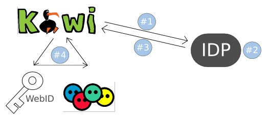

FOAF+SSL is a distributed, decentralized service for authentication in the Semantic Web. It works by coupling a web id (which is a URI in the web that identifies a person) with a public RSA key. The service requires that a person has installed a certificate in his/her browser, which contains the RSA private key. Private and public keys are used to create and verify signatures, which enable the reliable identification of a person (or a server) as the public key verification of a message that has been signed with the hidden private key of another person provides the trust that the message has not been malformed during its transmission.
KiWi uses the foaf-ssl service as an alternative way to sign on. It, therefore, connects to the IDP server, which provides the forwarding to a passed URL and the passing of the users webid and the current timestamp via HTTP GET parameters if the authentication process succeeded. The IDP server uses an HTTPS connection, which prevents malicious attacks (e.g. man-in-the-middle attack, other eavesdropping) and signes the resulting url to which it forwards. The signature is appended as a GET parameter to the url. Figure 1: Authentication process in KiWi with foaf+ssl
The authentication process is shown in figure 1. For example, if I call the IDP service in the following way (1):
https://foafssl.org/srv/idp?authreqissuer=http://www.kiwi.eu/seam/resource/restv1/FOAFSSLAuthenticationThe IDP server then verifies the browsers certificate (2) and redirects to a URL, similar as shown below (3):
http://www.kiwi.eu/seam/resource/restv1/FOAFSSLAuthentication?webid=http://test.webid.com/12345&ts=2009-07-08T12:00:21-0700&sig=af12786de34789a345978fcd78f86e8903c87979a7896435KiWi then has to check whether the request to http://www.kiwi.eu/seam/resource/restv1/FOAFSSLAuthentication really came from the IDP server. This is done by verifying the signedequest url WITHOUT the signature part against the public key of the IDP server. The RSA public key is available as modulus and exponent, as well as in the PEM format and is listed under https://foafssl.org/srv/idp.
Here is another copy of the RSA key:
RSA modulus:1117582096330242936229370743348048131237535940 6302264245246642072366080419433427895813823303 9606801075997210788939971349831547928224553556 0462846540424041789885598388481207915815110908 3285451657427103176923091731074060954301303533 5751466064499080029720915614213123921580797422 278918181997694803438873066536961
RSA exponent:
65537
If the signature can be successfully verified, the webid can be used to access the users foaf file (4). Afterwards, the data from the foaf file is loaded into the kiwi system and the user gets logged in by calling Identity.instance().login();